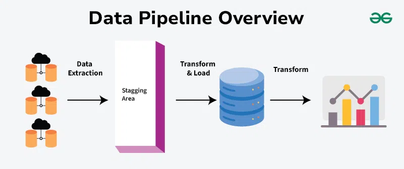
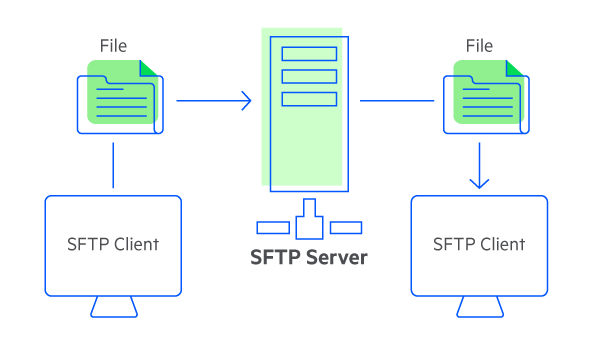

Mon alternance chez Ibanfirst
Fondée en 2016, iBanFirst est une fintech européenne qui révolutionne les paiements internationaux pour les entreprises. Elle propose une plateforme en ligne permettant d’envoyer, recevoir et gérer des paiements multidevises de manière rapide, transparente et sécurisée, sans passer par les circuits bancaires traditionnels. Grâce à une interface moderne et à des taux de change compétitifs, iBanFirst simplifie les opérations financières à l'international pour les PME et ETI.
Aujourd’hui, iBanFirst compte plus de 500 collaborateurs répartis dans plusieurs bureaux en Europe (dont Paris, Bruxelles, Amsterdam, Munich, Bucarest, et Milan), et continue de croître rapidement pour répondre aux besoins d’un marché en pleine digitalisation.
J'ai la chance d'y être alternante depuis septembre 2024 en tant que data engineer dans les bureaux de Dijon.
En tant que data engineer, mon rôle est de concevoir, construire et maintenir les pipelines de données qui alimentent les systèmes d’analyse et les outils décisionnels. Je veille à la qualité, à la fiabilité et à la disponibilité des données, tout en optimisant leur traitement pour les équipes métier et data science.

Les technologies que j'utilise sont les suivantes:
- Python : langage principal pour développer des scripts d’automatisation, des traitements de données et des API internes.
- Snowflake : data warehouse cloud utilisé pour stocker, interroger et analyser de grandes volumétries de données de manière scalable et performante.
- Airflow : orchestrateur de workflows permettant de planifier et superviser les traitements de données quotidiens via des DAGs (Directed Acyclic Graphs).
Les projets sur lesquels j'ai travaillé sont pour la plupart des refontes de projets existants en Tallend à migrer en Python. Ce sont des jobs de récupération de données et tournent le plus souvent tous les jours. J'en ai selectionné trois ici.
Fichier csv à partir de templates : PSR IT report
Dans les pays où les banques centrales ou les régulateurs l'exigent, iBanFirst doit produire un rapport sur les transactions effectuées sur leur territoire. Chacun a des exigences particulières. Nous regroupons ces projets sous le nom de Payment Statistics Reports (PSR).
Le premier grand projet sur lequel j'ai travaillé concerne la création du rapport pour l'Italie. Il s'agit d'une refonte d’un projet existant en Python qui générait, tous les trimestres et semestres, un rapport au format Excel. Cependant, le régulateur exige désormais un fichier au format CSV. J'ai donc adapté le projet à cette nouvelle demande.
Le régulateur nous a fourni des modèles à comparer avec nos données. La difficulté réside dans la diversité des transactions à analyser et à traiter. Par exemple, les données d’iBanFirst recensent les villes dans lesquelles les transactions ont eu lieu, tandis que le régulateur souhaite que les paiements soient classés par province italienne.
Les rapports au format CSV sont ensuite envoyés automatiquement via SFTP au régulateur italien.
J’ai d’abord travaillé seule sur ce projet, puis en collaboration avec un membre de mon équipe.
Transferts fichiers SFTP : Manual Swaps, Calixys
En tant que data engineer, j’ai travaillé sur plusieurs projets d’automatisation de transferts de fichiers Excel et CSV via SFTP.
Le transfert SFTP (Secure File Transfer Protocol) est un protocole sécurisé qui permet d’envoyer et de recevoir des fichiers sur un réseau via une connexion SSH, garantissant la confidentialité et l’intégrité des données échangées.
Ces projets impliquent à la fois :
- la récupération de données depuis des API externes et la gestion d’échanges de fichiers avec les équipes métier via le serveur SFTP de l’entreprise. Dans un sens, je collecte des données issues d’API, que je transforme et formate en fichiers CSV avant de les déposer sur le SFTP pour qu’elles soient utilisées par les équipes concernées.
- dans l’autre sens, les équipes métier déposent sur le SFTP des fichiers contenant, par exemple, des noms de tables ou des données à jour. Ces fichiers servent ensuite à alimenter ou mettre à jour les données correspondantes dans notre entrepôt de données Snowflake, en passant par des traitements automatisés développés en Python. Ces échanges structurés permettent d’assurer une circulation fiable et régulière de l’information entre les systèmes internes et les équipes métier.
Un autre projet sur lequel j’ai travaillé est à destination de Calixys, une entreprise de régulation bancaire.
Il consistait à récupérer des données liées à l’historique bancaire de l’entreprise, provenant de sources multiples et parfois archivées sous différents formats (CSV, Excel, ZIP, etc.).
L’objectif était d’extraire, nettoyer et uniformiser ces données, malgré leur hétérogénéité, afin de les rendre exploitables. Une fois les fichiers traités, ils étaient automatiquement déposés sur le serveur SFTP de notre partenaire Calixys, en respectant les exigences spécifiques de structure et de format attendues.
Ce projet m’a permis de renforcer mes compétences en traitement de fichiers complexes, en automatisation avec Python, et en gestion d’échanges de données sécurisés.
Récupération de données avec une API: Comply Advantage
L'API que j'ai utilisée est celle de Comply Advantage, une entreprise spécialisée dans la détection et la gestion des risques liés à la lutte contre le blanchiment d'argent (AML) et la fraude financière.
Un projet récupérait déjà les données disponibles sur les transactions d’iBanFirst. Initialement, je devais adapter l'appel à l'API pour ajouter des colonnes à la base de données.
Je devais d'abord récupérer les ID des transactions dans notre base de données en fonction de leur date et de leur nature. L'API fonctionne de manière incrémentale : un appel correspond à une transaction. Or, ce programme doit analyser en moyenne 4 000 transactions par jour. J'ai utilisé le multiprocessing pour réduire le temps d'exécution du programme de 45 minutes à 5 minutes, en effectuant plusieurs appels à l'API simultanément.